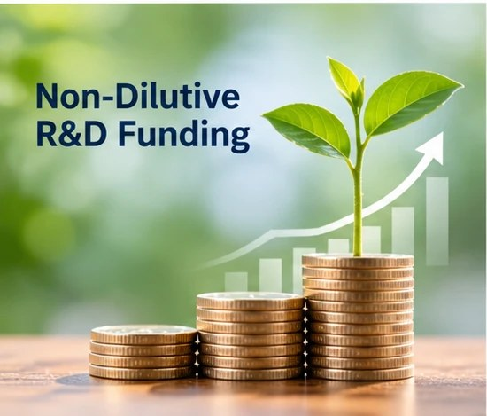

<meta charset="utf-8">
<meta name="viewport" content="width=device-width,initial-scale=1,viewport-fit=cover">
<title>Life Sciences Sector Page</title>
<meta name="claude:viewport-fit-sides" content="cover">
<!-- SEO (set in Yoast): title: R&D Tax Relief for Life Sciences UK | iTax Advisors | description: R&D tax relief for biotech, pharma and medtech: clinical trial costs, CRO contracts and contracted-out rules, handled by senior specialists. Book a call. -->
<link rel="preconnect" href="https://fonts.googleapis.com"><link rel="preconnect" href="https://fonts.gstatic.com" crossorigin>
<link rel="stylesheet" href="https://fonts.googleapis.com/css2?family=Raleway:wght@400;500;600;700;800&display=swap">
<style>
:root{--navy-950:#0c2136;--navy-900:#143451;--navy-800:#183c5e;--navy-700:#1b456d;--green:#8ab141;--green-deep:#4f7a0f;--ink:#21507b;--muted:#4a6580;--paper:#eef2f1;--white:#fff;--line:#d3dde7;--line-dark:rgba(255,255,255,.14);--on-dark:#e8f0f7;--on-dark-muted:#aebfd0;--star:#e0a53a;--font:"Raleway",Arial,Helvetica,sans-serif;--radius:16px;--shadow:0 22px 44px -20px rgba(12,33,54,.4);color-scheme:light}
*{box-sizing:border-box}
html{scroll-behavior:smooth;scroll-padding-top:24px}
body{margin:0;background:var(--paper);color:var(--ink);font-family:var(--font);font-size:17px;line-height:1.6;letter-spacing:.2px;-webkit-font-smoothing:antialiased;overflow-x:hidden}
img{max-width:100%;display:block}a{color:inherit}
h1,h2,h3,h4{font-family:var(--font);line-height:1.12;margin:0;text-wrap:balance;letter-spacing:-.01em}p{margin:0}
:focus-visible{outline:3px solid var(--green);outline-offset:3px;border-radius:6px}
.wrap{width:100%;max-width:1200px;margin-inline:auto;padding-left:max(18px,env(safe-area-inset-left,0px));padding-right:max(18px,env(safe-area-inset-right,0px))}
.label{font-size:12.5px;letter-spacing:.16em;text-transform:uppercase;color:var(--green-deep);font-weight:700;display:flex;align-items:center;gap:10px}
.label::before{content:"";width:26px;height:2px;background:currentColor;opacity:.7}
.dark .label,.hero .label{color:var(--green)}
.sec{padding-block:clamp(48px,6vw,84px)}
.sec h2{font-size:clamp(27px,3.4vw,42px);font-weight:700;color:var(--navy-700);margin-top:14px;max-width:24ch}
.dark h2{color:#fff}
.lede{font-size:18px;color:var(--muted);max-width:62ch;margin-top:16px}.dark .lede{color:var(--on-dark-muted)}
.dark{background:var(--navy-900);color:var(--on-dark);position:relative;overflow:hidden}
.dark::before{content:"";position:absolute;inset:0;background:repeating-linear-gradient(0deg,transparent 0 55px,rgba(255,255,255,.035) 55px 56px);pointer-events:none}
.dark>*{position:relative}
.img{position:relative;overflow:hidden;background:var(--navy-800)}
.img img{width:100%;height:100%;object-fit:cover;transition:transform 1s cubic-bezier(.2,.7,.2,1)}
.img:hover img{transform:scale(1.06)}
.btn{display:inline-flex;align-items:center;gap:10px;font-family:var(--font);font-weight:700;font-size:15px;letter-spacing:.02em;text-decoration:none;border:0;cursor:pointer;border-radius:999px;padding:15px 26px;transition:transform .2s,box-shadow .25s,background .25s;position:relative;overflow:hidden}
.btn svg{width:20px;height:20px}
.btn-green{background:var(--green);color:var(--navy-950);box-shadow:0 10px 26px -10px rgba(138,177,65,.85)}
.btn-green:hover{background:#9cc552}
.btn-green::after{content:"";position:absolute;inset:0;background:linear-gradient(105deg,transparent 30%,rgba(255,255,255,.55) 50%,transparent 70%);transform:translateX(-120%)}
.btn-green:hover::after{transform:translateX(120%);transition:transform .8s}
.btn-ghost{background:transparent;color:#fff;box-shadow:inset 0 0 0 2px rgba(255,255,255,.35)}
.btn-ghost:hover{box-shadow:inset 0 0 0 2px var(--green);color:var(--green)}
.btn-line{background:#fff;color:var(--navy-700);box-shadow:inset 0 0 0 2px var(--line)}.btn-line:hover{box-shadow:inset 0 0 0 2px var(--green)}
.more{font-weight:700;font-size:14px;color:var(--navy-700);display:inline-flex;align-items:center;gap:8px;text-decoration:none}
.more svg{width:18px;height:18px;transition:transform .25s}a:hover>.more svg,.more:hover svg{transform:translateX(5px)}
.eyebrow{display:inline-flex;align-items:center;gap:10px;font-weight:700;font-size:12px;letter-spacing:.12em;text-transform:uppercase;color:var(--green);border:1px solid rgba(138,177,65,.45);padding:7px 14px;border-radius:999px;background:rgba(138,177,65,.08)}
.eyebrow i{width:8px;height:8px;border-radius:50%;background:var(--green);animation:pulse 2s infinite}
@keyframes pulse{0%{box-shadow:0 0 0 0 rgba(138,177,65,.7)}100%{box-shadow:0 0 0 12px rgba(138,177,65,0)}}
.hero{position:relative;background:var(--navy-950);color:var(--on-dark);padding-block:clamp(72px,9vw,120px) clamp(56px,7vw,92px);overflow:hidden;isolation:isolate}
.hero h1{font-size:clamp(34px,5vw,60px);font-weight:800;color:#fff;letter-spacing:-.02em;margin-top:22px}
.w{display:inline-block;overflow:hidden;vertical-align:bottom;padding-bottom:.08em;margin-bottom:-.08em}
.w i{display:inline-block;font-style:normal;animation:up .9s cubic-bezier(.2,.8,.2,1) both;animation-delay:calc(var(--n)*80ms + .1s)}
@keyframes up{from{transform:translateY(105%)}to{transform:none}}
.hl{color:var(--green);position:relative;white-space:nowrap}
.hl::after{content:"";position:absolute;left:0;right:0;bottom:-.04em;height:.1em;background:var(--green);border-radius:4px;transform-origin:left;animation:sweep 1.1s .9s cubic-bezier(.2,.8,.2,1) both}
@keyframes sweep{from{transform:scaleX(0)}to{transform:scaleX(1)}}
.hero .answer{font-size:clamp(17px,1.5vw,20px);color:var(--on-dark);max-width:58ch;margin-top:24px}
.hero .answer b{color:#fff}
.cta-row{display:flex;flex-wrap:wrap;gap:14px;margin-top:30px}
.chips{display:flex;flex-wrap:wrap;gap:10px;margin-top:28px}
.chip{display:inline-flex;align-items:center;gap:8px;font-size:13px;font-weight:600;color:var(--on-dark);border:1px solid var(--line-dark);background:rgba(255,255,255,.06);padding:8px 14px;border-radius:999px}
.chip svg{width:16px;height:16px;color:var(--green)}
.formcard{background:#fff;color:var(--ink);border-radius:22px;padding:clamp(24px,3.2vw,42px);box-shadow:0 40px 70px -30px rgba(12,33,54,.55);position:relative;min-width:0}
.formcard h3{font-size:25px;color:var(--navy-700);font-weight:800}
.formcard .sub{font-size:15px;color:var(--muted);margin-top:6px}
.field{display:grid;gap:6px;margin-top:16px}
.field label{font-size:13.5px;font-weight:700;color:var(--navy-700)}
.field label em{font-style:normal;color:var(--muted);font-weight:500}
.field input,.field select,.field textarea{font:inherit;font-size:16px;color:var(--ink);background:var(--paper);border:1.5px solid var(--line);border-radius:10px;padding:14px 15px;width:100%;transition:border-color .2s,box-shadow .2s,background .2s}
.field textarea{min-height:120px;resize:vertical}
.field input:focus,.field select:focus,.field textarea:focus{outline:none;border-color:var(--navy-700);box-shadow:0 0 0 4px rgba(27,69,109,.15);background:#fff}
.row2{display:grid;grid-template-columns:1fr 1fr;gap:14px}
.consent{display:flex;gap:10px;align-items:flex-start;margin-top:16px;font-size:13.5px;color:var(--muted)}
.consent input{width:20px;height:20px;margin-top:2px;accent-color:var(--navy-700);flex:none}
.formcard .btn{width:100%;justify-content:center;margin-top:20px;min-height:52px}
.fine{font-size:12.5px;color:#a33a2b;margin-top:12px;min-height:1em}
.done{display:none}.done.show{display:block}
.done .tick{width:56px;height:56px;border-radius:50%;background:var(--green);color:var(--navy-950);display:grid;place-items:center;margin-bottom:16px}
.done .tick svg{width:30px;height:30px}.done h3{font-size:24px;color:var(--navy-700)}.done p{margin-top:8px;color:var(--muted)}
details{border-bottom:1px solid var(--line)}details:first-of-type{border-top:1px solid var(--line)}
summary{list-style:none;cursor:pointer;display:flex;justify-content:space-between;align-items:center;gap:20px;padding:22px 4px;font-weight:700;font-size:19px;color:var(--navy-700);line-height:1.3}
summary::-webkit-details-marker{display:none}
summary::after{content:"";flex:none;width:30px;height:30px;border-radius:50%;background:var(--paper) url("data:image/svg+xml,%3Csvg xmlns='http://www.w3.org/2000/svg' viewBox='0 0 24 24' fill='none' stroke='%231b456d' stroke-width='2.4' stroke-linecap='round'%3E%3Cpath d='M12 6v12M6 12h12'/%3E%3C/svg%3E") center/16px no-repeat;transition:transform .3s,background-color .3s}
details[open] summary::after{transform:rotate(45deg);background-color:var(--green)}
details p{padding:0 40px 24px 4px;color:var(--muted);max-width:70ch}details[open] p{animation:fadeUp .4s}
@keyframes fadeUp{from{opacity:0;transform:translateY(-6px)}to{opacity:1;transform:none}}
.faq-grid{display:grid;grid-template-columns:minmax(0,.7fr) minmax(0,1.3fr);gap:clamp(28px,5vw,72px)}
.anim .rv.pending:not(.in){opacity:0;transform:translateY(24px)}
.anim .wipe.pending:not(.in){clip-path:inset(0 0 100% 0)}
.rv{transition:opacity .8s cubic-bezier(.2,.7,.2,1),transform .8s cubic-bezier(.2,.7,.2,1)}
.wipe{transition:clip-path 1.1s cubic-bezier(.7,0,.2,1)}
.rv.d1{transition-delay:.08s}.rv.d2{transition-delay:.16s}.rv.d3{transition-delay:.24s}
.tilt{transform-style:preserve-3d;transition:transform .35s,box-shadow .35s}
@media (max-width:860px){body{font-size:16px}.sec{padding-block:44px}.sec h2{max-width:none;font-size:clamp(26px,7.4vw,32px)}.lede{font-size:16.5px}.faq-grid{grid-template-columns:minmax(0,1fr)}.cta-row .btn{width:100%;justify-content:center}.hl{white-space:normal}.hero{padding-block:56px 44px}}
@media (max-width:600px){.row2{grid-template-columns:minmax(0,1fr)}.field input,.field select,.field textarea{min-height:48px}summary{font-size:17px;padding:18px 2px;min-height:56px}}
@media (hover:none){.mag,.tilt{transform:none!important}}
@media (prefers-reduced-motion:reduce){*,*::before,*::after{animation:none!important;transition:none!important}html{scroll-behavior:auto}}

.faq-grid{align-items:stretch}.faq-left{position:sticky;top:24px}@media (max-width:860px){.faq-left{position:static}}
.anim .rv.pending:not(.in){transform:translateY(14px)}.rv{transition-duration:.55s}

.hero{padding-block:clamp(64px,8vw,104px) clamp(48px,6vw,80px);background:linear-gradient(135deg,var(--navy-950),var(--navy-800))}
.hero::before{content:"";position:absolute;inset:0;z-index:-1;background:radial-gradient(40% 55% at 85% 40%,rgba(138,177,65,.18),transparent 70%),repeating-linear-gradient(0deg,transparent 0 47px,rgba(255,255,255,.03) 47px 48px),repeating-linear-gradient(90deg,transparent 0 95px,rgba(255,255,255,.02) 95px 96px)}
.glow{position:absolute;width:520px;height:520px;border-radius:50%;pointer-events:none;z-index:-1;background:radial-gradient(circle,rgba(138,177,65,.22),transparent 65%);left:0;top:0;transform:translate(-50%,-50%);transition:opacity .4s;opacity:0}
.hero h1{font-size:clamp(30px,3.6vw,46px)}
.hgrid{display:grid;grid-template-columns:minmax(0,1fr) minmax(0,1fr);gap:clamp(30px,5vw,72px);align-items:center}
.hpic{border-radius:24px;box-shadow:0 50px 80px -34px rgba(0,0,0,.8)}
.hpic::after{content:"";position:absolute;inset:0;background:linear-gradient(180deg,transparent 50%,rgba(12,33,54,.55))}
.hpic .cap{display:none}.hpic .cap_{position:absolute;left:16px;bottom:16px;z-index:2;background:var(--green);color:var(--navy-950);font-size:12px;letter-spacing:.1em;text-transform:uppercase;font-weight:800;padding:8px 13px;border-radius:8px}
.strip{background:#fff;border-bottom:1px solid var(--line)}
.strip-in{display:grid;grid-template-columns:repeat(3,minmax(0,1fr));gap:12px 28px;padding-block:20px}
.strip-in span{display:flex;gap:10px;align-items:center;font-weight:700;font-size:14.5px;color:var(--navy-700)}
.strip-in svg{width:22px;height:22px;color:var(--green-deep);flex:none}
.split{display:grid;grid-template-columns:minmax(0,1.05fr) minmax(0,.95fr);gap:clamp(30px,5vw,72px);align-items:center}
.pic{border-radius:22px;box-shadow:0 40px 70px -30px rgba(12,33,54,.6)}
.pic .cap{position:absolute;left:14px;bottom:14px;z-index:2;background:var(--green);color:var(--navy-950);font-size:11.5px;letter-spacing:.1em;text-transform:uppercase;font-weight:800;padding:7px 12px;border-radius:7px;max-width:70%}
.pic::after{content:"";position:absolute;inset:0;background:linear-gradient(180deg,transparent 55%,rgba(12,33,54,.4));pointer-events:none}
.body{color:var(--muted);font-size:17px;margin-top:14px;max-width:62ch}
.why{margin-top:22px;display:grid;gap:14px}
.why div{display:grid;grid-template-columns:44px 1fr;gap:14px}
.why svg{width:44px;height:44px;padding:10px;border-radius:12px;background:var(--navy-700);color:var(--green)}
.why b{display:block;color:var(--navy-700);font-size:18px}.why span{color:var(--muted);font-size:16px}
.routes{background:#fff}
.lgrid{display:grid;grid-template-columns:repeat(3,minmax(0,1fr));gap:16px;margin-top:36px}
.lc{background:var(--paper);border:1px solid var(--line);border-radius:var(--radius);padding:24px 22px;display:grid;gap:10px;align-content:start;transition:transform .3s,box-shadow .3s,border-color .3s}
.lc:hover{transform:translateY(-6px);box-shadow:var(--shadow);border-color:var(--green)}
.lc svg{width:44px;height:44px;padding:10px;border-radius:12px;background:var(--navy-700);color:var(--green)}
.lc h3{font-size:19px;color:var(--navy-700);font-weight:800;line-height:1.25}.lc p{font-size:15.5px;color:var(--muted)}
.notefinal{margin-top:24px;display:grid;grid-template-columns:auto 1fr;gap:14px;align-items:start;background:#eaf4d4;border-radius:14px;padding:16px 20px;color:var(--navy-700);font-weight:600}
.notefinal svg{width:26px;height:26px;color:var(--green-deep)}
.lsel{display:grid;grid-template-columns:minmax(0,.78fr) minmax(0,1.22fr);gap:clamp(18px,3vw,36px);margin-top:36px;align-items:start}
.llist{display:grid;gap:10px;align-content:start}
.lbtn{display:flex;gap:14px;align-items:center;text-align:left;font:inherit;font-weight:700;font-size:16px;color:var(--navy-700);background:var(--paper);border:1.5px solid var(--line);border-radius:14px;padding:16px 18px;cursor:pointer;transition:transform .25s,border-color .25s,background .25s,box-shadow .25s;min-height:60px}
.lbtn span{flex:none;width:36px;height:36px;border-radius:50%;background:#fff;display:grid;place-items:center;font-size:14px;transition:background .25s,color .25s}
.lbtn:hover{border-color:var(--green);transform:translateX(4px)}
.lbtn[aria-selected="true"]{background:var(--green);color:var(--navy-950);border-color:var(--green)}
.lbtn[aria-selected="true"] span{background:var(--navy-950);color:var(--green)}
.lpanel{background:#fff;color:var(--ink);border-radius:22px;padding:clamp(24px,3vw,40px);box-shadow:0 40px 60px -34px rgba(0,0,0,.7);position:relative;overflow:hidden;animation:fadeUp .45s}
.lpanel[hidden]{display:none}
.lpanel h3{font-size:clamp(21px,2.3vw,27px);font-weight:800;color:var(--navy-700)}
.lrow{margin-top:20px;padding-top:16px;border-top:1px solid var(--line)}
.lrow small{display:block;font-size:11.5px;letter-spacing:.14em;text-transform:uppercase;color:var(--green-deep);font-weight:800;margin-bottom:6px}
.lrow p{color:var(--ink);font-size:16.5px}.lrow .pp,.csc .pp{margin-top:10px}
.cs{display:grid;grid-template-columns:repeat(3,minmax(0,1fr));gap:16px;margin-top:36px}
.csc{background:#fff;border:1px solid var(--line);border-radius:var(--radius);padding:24px 22px;display:flex;flex-direction:column}
.csc small{display:block;font-size:12px;letter-spacing:.14em;text-transform:uppercase;color:var(--green-deep);font-weight:800;margin-bottom:10px}
.csc p{font-size:16px;color:var(--muted)}
.stat{margin-top:auto;padding:14px 16px;border-radius:12px;background:var(--navy-700);color:#fff;display:grid;gap:2px}
.csc .stat{margin-top:18px}
.stat b{font-size:28px;color:var(--green);line-height:1.1}.stat span{font-size:13.5px;color:var(--on-dark)}
.stat.g{background:var(--green)}.stat.g b{color:var(--navy-950)}.stat.g span{color:var(--navy-900);font-weight:600}
.sgrid{display:grid;grid-template-columns:repeat(2,minmax(0,1fr));gap:16px;margin-top:36px}
.sc{background:var(--paper);border:1px solid var(--line);border-radius:var(--radius);padding:26px 24px;display:grid;gap:12px;align-content:start}
.sc .tag{justify-self:start;font-weight:800;font-size:12px;letter-spacing:.08em;text-transform:uppercase;padding:5px 11px;border-radius:7px;background:#dff0b8;color:#3d6409}
.sc h3{font-size:22px;color:var(--navy-700)}.sc p{font-size:16px;color:var(--muted)}
.lm{margin-top:28px;display:flex;justify-content:space-between;align-items:center;gap:20px;background:var(--navy-900);color:#fff;border-radius:var(--radius);padding:22px 26px}
.lm b{font-size:19px}.lm p{color:var(--on-dark-muted);font-size:15px;margin-top:4px}
.contact{background:var(--navy-950);color:var(--on-dark)}
.contact::before{background:radial-gradient(50% 60% at 15% 20%,rgba(27,69,109,.7),transparent 70%)}
.cgrid{display:grid;grid-template-columns:minmax(0,.85fr) minmax(0,1.15fr);gap:clamp(28px,5vw,64px);align-items:start}
.contact .lede+.lede{margin-top:12px}
.det{margin-top:26px;display:grid;gap:16px;padding-top:22px;border-top:1px solid var(--line-dark)}
.det div{display:grid;grid-template-columns:28px 1fr;gap:12px;color:#fff;font-size:16px}
.det svg{width:24px;height:24px;color:var(--green)}.det a{color:#fff}
.rel{margin-top:26px;display:grid;gap:10px}
.rel a{display:flex;justify-content:space-between;align-items:center;gap:12px;text-decoration:none;color:#fff;font-weight:700;border:1px solid var(--line-dark);border-radius:12px;padding:14px 16px;transition:border-color .25s,background .25s,transform .25s}
.rel a:hover{border-color:var(--green);background:rgba(138,177,65,.1);transform:translateX(4px)}
.rel svg{width:20px;height:20px;color:var(--green)}
.faq-side{margin-top:26px;position:relative;border-radius:var(--radius);overflow:hidden;aspect-ratio:1.25/1}.faq-side .img{position:absolute;inset:0}.faq-side::after{content:"";position:absolute;inset:0;background:linear-gradient(180deg,rgba(12,33,54,.05),rgba(12,33,54,.88))}.faq-side .t{position:absolute;z-index:2;left:18px;right:18px;bottom:18px;color:#fff}.faq-side .t b{display:block;font-size:19px;line-height:1.2;margin-bottom:12px}.btn-sm{padding:10px 20px;font-size:13.5px}
@media (max-width:1020px){.lgrid,.cs{grid-template-columns:repeat(2,minmax(0,1fr))}}
@media (max-width:860px){
  .strip-in{grid-template-columns:minmax(0,1fr)}
  .hgrid,.split,.lsel,.cgrid,.sgrid{grid-template-columns:minmax(0,1fr)}
  .lm{flex-direction:column;align-items:stretch}.lm .btn{justify-content:center}
  .faq-side{display:none}.lbtn{min-height:56px}
}
@media (max-width:600px){.lgrid,.cs{grid-template-columns:minmax(0,1fr)}.formcard{padding:22px 18px}.stat b{font-size:25px}}
.lm .btn{flex:none;white-space:nowrap}.lside{position:sticky;top:24px;display:grid;gap:16px}@media (max-width:860px){.lside{position:static}}

/*HERO2*/
.hero.hero2{padding-block:clamp(52px,6vw,84px);background:linear-gradient(120deg,var(--navy-950) 0%,var(--navy-900) 58%,var(--navy-800) 100%)}
.hero.hero2::after{display:none}
.hero2 .hero2-in{position:relative;z-index:2}
.hero2 .hero2-text{max-width:min(600px,50%)}
.hero2 h1{font-size:clamp(30px,3.7vw,48px)}
.hero2 .hero2-img{position:absolute;z-index:1;right:0;top:50%;width:min(50vw,840px);aspect-ratio:1672/941;transform:translateY(-50%);-webkit-mask-image:linear-gradient(90deg,transparent 0,#000 34%);mask-image:linear-gradient(90deg,transparent 0,#000 34%)}
.hero2 .hero2-img img{width:100%;height:100%;object-fit:cover;display:block}
.hero2 .hero2-img.rv.pending:not(.in){transform:translateY(-50%)}
.crumbs{display:flex;flex-wrap:wrap;gap:4px 8px;font-size:13px;color:var(--on-dark-muted);margin-bottom:22px;font-weight:600}
.crumbs a{color:var(--on-dark);text-decoration:none}.crumbs a:hover{color:var(--green)}
.crumbs span+span::before{content:"\203A";margin-right:8px;opacity:.6}
.crumbs [aria-current]{color:var(--green)}
@media (max-width:900px){
  .hero2 .hero2-text{max-width:none}
  .hero2 .hero2-img{position:relative;right:auto;top:auto;transform:none;width:calc(100% - 36px);max-width:620px;margin:30px auto 0;border-radius:18px;overflow:hidden;-webkit-mask-image:none;mask-image:none;box-shadow:0 30px 60px -28px rgba(0,0,0,.8)}
  .hero2 .hero2-img.rv.pending:not(.in){transform:none}
}
/*POLISH*/
.sec h2::after{content:"";display:block;width:56px;height:4px;border-radius:4px;background:var(--green);margin-top:18px}
.dark .sec h2::after,.sec.dark h2::after{background:var(--green)}
[style*="background:var(--paper)"]{background-image:radial-gradient(rgba(27,69,109,.07) 1.2px,transparent 1.2px)!important;background-size:24px 24px!important}
.lc,.rq,.sc,.csc,.rc,.hc{position:relative;overflow:hidden}
.lc::before,.rq::before,.sc::before,.csc::before,.rc::before{content:"";position:absolute;left:0;top:0;height:4px;width:100%;background:linear-gradient(90deg,var(--green),#b7d77a);transform:scaleX(0);transform-origin:left;transition:transform .45s}
.lc:hover::before,.rq:hover::before,.sc:hover::before,.csc:hover::before,.rc:hover::before{transform:scaleX(1)}
.ready-in{margin-top:22px;border-top:1px dashed var(--line);padding-top:16px;font-size:14px;color:var(--muted)}
.ready-in b{display:block;color:var(--navy-700);margin-bottom:8px;font-size:14.5px}
.ready-in ul{margin:0;padding:0;list-style:none;display:grid;grid-template-columns:1fr 1fr;gap:6px 18px}
.ready-in li{display:flex;gap:8px}.ready-in svg{width:15px;height:15px;color:var(--green-deep);flex:none;margin-top:4px}
@media (max-width:600px){.ready-in ul{grid-template-columns:minmax(0,1fr)}}
.magnet{background:linear-gradient(135deg,var(--navy-800),var(--navy-950));color:#fff;position:relative;overflow:hidden}
.magnet::before{content:"";position:absolute;width:520px;height:520px;right:-120px;top:-160px;border-radius:50%;background:radial-gradient(circle,rgba(138,177,65,.3),transparent 70%);animation:drift 14s ease-in-out infinite alternate}
.formcard.spin{isolation:isolate}
.formcard.spin::after{content:"";position:absolute;inset:0;border-radius:20px;background:#fff;z-index:-1}
.formcard.spin::before{content:"";position:absolute;inset:-3px;border-radius:23px;z-index:-1;background:conic-gradient(from var(--a,0deg),var(--green),transparent 30%,transparent 70%,var(--green));animation:rot 6s linear infinite}
@property --a{syntax:"<angle>";initial-value:0deg;inherits:false}
@keyframes rot{to{--a:360deg}}
.formcard.big{padding:clamp(26px,3.4vw,44px)}
.formcard.big .field input,.formcard.big .field select,.formcard.big .field textarea{padding:15px 16px}
.mp-note{margin-top:10px;font-size:13px;color:var(--muted);font-style:italic}
.doc{position:relative;margin:30px auto 0;max-width:430px;aspect-ratio:.78/1;animation:fadeUp .5s}
.doc .sheet{position:absolute;inset:0;background:#fff;border-radius:10px;box-shadow:0 30px 55px -24px rgba(0,0,0,.75)}
.doc .s3{transform:rotate(5deg) translate(14px,6px);opacity:.55}
@media (max-width:520px){.doc{margin-inline:10px}.doc .s3{transform:rotate(4deg) translate(5px,5px)}.doc .s2{transform:rotate(-3deg) translate(-4px,4px)}}
.doc .s2{transform:rotate(-3.5deg) translate(-12px,4px);opacity:.8}
.doc .s1{overflow:hidden;display:flex;flex-direction:column;transition:transform .5s}
.doc:hover .s1{transform:translateY(-6px) rotate(.6deg)}
.dhead{background:var(--navy-700);padding:16px 20px}.dhead img{height:30px;width:auto}
.doc small{display:block;padding:20px 24px 0;font-size:11px;letter-spacing:.14em;text-transform:uppercase;font-weight:700;color:var(--green-deep)}
.doc h3{padding:8px 24px 0;font-size:clamp(20px,2.2vw,25px);color:var(--navy-700);font-weight:800;line-height:1.15}
.doc ol{list-style:none;margin:16px 24px 0;padding:0;counter-reset:d;border-top:2px solid var(--green)}
.doc li{counter-increment:d;display:flex;gap:12px;align-items:flex-start;padding:10px 0;border-bottom:1px solid var(--line);font-size:14px;line-height:1.35;color:var(--ink);font-weight:600}
.doc li::before{content:counter(d);flex:none;width:22px;height:22px;border-radius:5px;background:var(--navy-700);color:#fff;font-size:12px;font-weight:800;display:grid;place-items:center;margin-top:1px}
.dfoot{margin-top:auto;padding:12px 24px;display:flex;justify-content:space-between;font-size:11.5px;letter-spacing:.06em;text-transform:uppercase;font-weight:700;color:var(--muted);background:var(--paper)}
.m-head{max-width:760px}
.m-row{display:grid;grid-template-columns:minmax(0,.8fr) minmax(0,1.2fr);gap:clamp(28px,5vw,72px);align-items:center;margin-top:34px}
.m-row .doc{margin:0 auto;width:100%;max-width:400px}
.m-row .formcard.big{padding:clamp(28px,3.6vw,46px)}
.m-row .formcard.big .field input{padding:16px 16px}
@media (max-width:520px){.m-row .doc{width:calc(100% - 28px);margin-inline:auto}}
@media (max-width:860px){.m-row{grid-template-columns:minmax(0,1fr)}.doc{max-width:360px}}
.magnet{padding-block:clamp(48px,6vw,84px)}

/*LS v2*/
.ribbon{background:#fff;border-bottom:1px solid var(--line)}
.ribbon-in{display:flex;flex-wrap:wrap;justify-content:space-between;gap:12px 24px;padding-block:20px}
.ribbon-in span{display:flex;gap:10px;align-items:center;font-weight:700;font-size:14.5px;color:var(--navy-700)}
.ribbon-in svg{width:22px;height:22px;color:var(--green-deep);flex:none}
.assess{margin-top:34px;background:#fff;border:1px solid var(--line);border-left:5px solid var(--green);border-radius:var(--radius);padding:24px 28px;box-shadow:var(--shadow)}
.assess>b{display:block;color:var(--navy-700);font-size:18px;line-height:1.4}
.assess ul{list-style:none;margin:16px 0 18px;padding:0;display:flex;flex-wrap:wrap;gap:8px}
.assess li{font-weight:700;font-size:14px;color:var(--navy-700);background:#eaf4d4;border-radius:999px;padding:7px 14px}
.assess p{color:var(--muted);font-size:16.5px;max-width:78ch}
.bento{display:grid;grid-template-columns:repeat(4,minmax(0,1fr));grid-template-rows:auto auto;gap:16px;margin-top:36px}
.bc{position:relative;background:var(--paper);border:1px solid var(--line);border-radius:var(--radius);padding:24px 22px;display:grid;gap:10px;align-content:start;transition:transform .3s,box-shadow .3s,border-color .3s;overflow:hidden}
.bc:hover{transform:translateY(-6px);box-shadow:var(--shadow);border-color:var(--green)}
.bc svg{width:44px;height:44px;padding:10px;border-radius:12px;background:var(--navy-700);color:var(--green)}
.bc h3{font-size:19px;color:var(--navy-700);font-weight:800;line-height:1.25}.bc p{font-size:15.5px;color:var(--muted)}
.bn{position:absolute;right:16px;top:12px;font-weight:800;font-size:34px;line-height:1;color:rgba(27,69,109,.1);letter-spacing:-.02em}
.bimg{padding:0;background:#fff;align-content:start}
.bimg .img{border-radius:0;width:100%}.bimg .bt{padding:20px 22px 24px;display:grid;gap:8px;position:relative}
.bimg .bn{top:8px}
.b-clin{grid-column:1/3;grid-row:1}.b-drug{grid-column:3;grid-row:1}.b-bio{grid-column:4;grid-row:1}
.b-proc{grid-column:1;grid-row:2}.b-dig{grid-column:2;grid-row:2}.b-dev{grid-column:3/5;grid-row:2}
.bimg{display:grid;grid-template-columns:minmax(0,.5fr) minmax(0,.5fr);align-items:center}
.bimg .img{align-self:center}.bimg .bt{align-self:center;padding:22px 22px}
.b-dev .img{order:2}.b-dev .bt{order:1}
.lpic{border-radius:18px;box-shadow:0 30px 50px -26px rgba(0,0,0,.7)}
.cs2{display:grid;grid-template-columns:minmax(0,.9fr) minmax(0,1.1fr);gap:clamp(24px,4vw,56px);margin-top:36px;align-items:start}
.cs2-l{position:sticky;top:24px;display:grid;gap:14px}
.stats2{display:grid;grid-template-columns:1fr 1fr;gap:12px}.stats2 .stat{margin:0}
.tl2{list-style:none;margin:0;padding:0;display:grid;gap:16px;position:relative}
.tl2 li{background:#fff;border:1px solid var(--line);border-radius:var(--radius);padding:20px 22px 20px 70px;position:relative}
.tl2 .tn{position:absolute;left:18px;top:18px;width:40px;height:40px;border-radius:50%;background:var(--navy-700);color:var(--green);display:grid;place-items:center;font-weight:800}
.tl2 small{display:block;font-size:12px;letter-spacing:.14em;text-transform:uppercase;color:var(--green-deep);font-weight:800;margin-bottom:8px}
.tl2 p{font-size:16px;color:var(--muted)}.tl2 p+p{margin-top:10px}
.figs{display:grid;grid-template-columns:repeat(3,minmax(0,1fr));gap:10px}
.fig{background:var(--navy-700);border-radius:12px;padding:14px 12px;display:grid;gap:4px;align-content:start}
.fig b{font-size:clamp(24px,2.6vw,32px);line-height:1;color:var(--green);font-weight:800}
.fig span{font-size:12.5px;line-height:1.35;color:var(--on-dark)}
@media (max-width:1020px){.bento{grid-template-columns:repeat(2,minmax(0,1fr));grid-template-rows:auto}.b-clin,.b-dev,.b-drug,.b-bio,.b-proc,.b-dig{grid-column:auto;grid-row:auto}.b-clin,.b-dev{grid-column:1/-1}.b-dev .img{order:0}.b-dev .bt{order:0}}
@media (max-width:860px){.cs2{grid-template-columns:minmax(0,1fr)}.cs2-l{position:static}.ribbon-in{justify-content:flex-start}}
@media (max-width:600px){.bimg{grid-template-columns:minmax(0,1fr)}.bento{grid-template-columns:minmax(0,1fr)}.figs{grid-template-columns:minmax(0,1fr)}.fig{grid-template-columns:auto 1fr;align-items:center;gap:12px}.stats2{grid-template-columns:minmax(0,1fr)}.assess{padding:20px 18px}.ribbon-in{gap:10px 18px}.ribbon-in span{font-size:13.5px}}

</style>
<svg width="0" height="0" style="position:absolute" aria-hidden="true">
<symbol id="i-check" viewBox="0 0 24 24" fill="none" stroke="currentColor" stroke-width="2.4" stroke-linecap="round" stroke-linejoin="round"><path d="M5 12.5l4.5 4.5L19 7.5"/></symbol>
<symbol id="i-arrow" viewBox="0 0 24 24" fill="none" stroke="currentColor" stroke-width="2.2" stroke-linecap="round" stroke-linejoin="round"><path d="M5 12h14M13 6l6 6-6 6"/></symbol>
<symbol id="i-shield" viewBox="0 0 24 24" fill="none" stroke="currentColor" stroke-width="1.9" stroke-linecap="round" stroke-linejoin="round"><path d="M12 3l7 3v5.5c0 4.3-2.9 8-7 9.5-4.1-1.5-7-5.2-7-9.5V6l7-3z"/><path d="M8.8 12l2.2 2.2 4.2-4.4"/></symbol>
<symbol id="i-search" viewBox="0 0 24 24" fill="none" stroke="currentColor" stroke-width="1.9" stroke-linecap="round" stroke-linejoin="round"><circle cx="10.5" cy="10.5" r="6"/><path d="M15 15l5 5"/></symbol>
<symbol id="i-scale" viewBox="0 0 24 24" fill="none" stroke="currentColor" stroke-width="1.9" stroke-linecap="round" stroke-linejoin="round"><path d="M12 4v16M6 20h12M5 7h14"/><path d="M5 7l-3 7a3.5 3.5 0 006 0L5 7zM19 7l-3 7a3.5 3.5 0 006 0l-3-7z"/></symbol>
<symbol id="i-clock" viewBox="0 0 24 24" fill="none" stroke="currentColor" stroke-width="1.9" stroke-linecap="round" stroke-linejoin="round"><circle cx="12" cy="12" r="8.5"/><path d="M12 7.5V12l3 2"/></symbol>
<symbol id="i-doc" viewBox="0 0 24 24" fill="none" stroke="currentColor" stroke-width="1.9" stroke-linecap="round" stroke-linejoin="round"><path d="M7 3h7l4 4v14H7z"/><path d="M14 3v4h4M9.5 12h6M9.5 15.5h6"/></symbol>
<symbol id="i-mail" viewBox="0 0 24 24" fill="none" stroke="currentColor" stroke-width="1.9" stroke-linecap="round" stroke-linejoin="round"><rect x="3" y="5" width="18" height="14" rx="2"/><path d="M3 7l9 6 9-6"/></symbol>
<symbol id="i-pin" viewBox="0 0 24 24" fill="none" stroke="currentColor" stroke-width="1.9" stroke-linecap="round" stroke-linejoin="round"><path d="M12 21s7-6.2 7-11.5A7 7 0 005 9.5C5 14.8 12 21 12 21z"/><circle cx="12" cy="9.5" r="2.5"/></symbol>
<symbol id="i-folder" viewBox="0 0 24 24" fill="none" stroke="currentColor" stroke-width="1.9" stroke-linecap="round" stroke-linejoin="round"><path d="M3 7a2 2 0 012-2h4l2 2h8a2 2 0 012 2v8a2 2 0 01-2 2H5a2 2 0 01-2-2V7z"/></symbol>
<symbol id="i-flag" viewBox="0 0 24 24" fill="none" stroke="currentColor" stroke-width="1.9" stroke-linecap="round" stroke-linejoin="round"><path d="M5 21V4M5 4h11l-2 4 2 4H5"/></symbol>
<symbol id="i-user" viewBox="0 0 24 24" fill="none" stroke="currentColor" stroke-width="1.9" stroke-linecap="round" stroke-linejoin="round"><circle cx="12" cy="8" r="4"/><path d="M4 21c0-4 3.6-7 8-7s8 3 8 7"/></symbol>
<symbol id="i-link" viewBox="0 0 24 24" fill="none" stroke="currentColor" stroke-width="1.9" stroke-linecap="round" stroke-linejoin="round"><path d="M10 14a4 4 0 005.7 0l3-3a4 4 0 00-5.7-5.7l-1 1"/><path d="M14 10a4 4 0 00-5.7 0l-3 3A4 4 0 0010 18.7l1-1"/></symbol>
<symbol id="i-in" viewBox="0 0 24 24" fill="currentColor"><path d="M4.98 3.5a2.5 2.5 0 11-.02 5 2.5 2.5 0 01.02-5zM3 9.75h4V21H3V9.75zm6.5 0h3.8v1.54h.06c.53-1 1.82-2.05 3.75-2.05 4 0 4.74 2.63 4.74 6.05V21h-4v-4.9c0-1.17-.02-2.67-1.63-2.67-1.63 0-1.88 1.27-1.88 2.58V21h-4V9.75z"/></symbol>
</svg>

<main>
<section class="hero hero2" id="hero">
  <div class="glow" id="glow"></div>
  <div class="wrap hero2-in"><div class="hero2-text">
    <nav class="crumbs" aria-label="Breadcrumb"><span><a href="https://www.itaxadvisors.co.uk/">Home</a></span><span><a href="https://www.itaxadvisors.co.uk/#sectors">Sectors</a></span><span aria-current="page">Life Sciences</span></nav>
    <span class="eyebrow"><i></i> Life sciences, biotechnology &amp; MedTech</span>
    <h1><span class="w" style="--n:0"><i>R&amp;D</i></span> <span class="w" style="--n:1"><i>Tax</i></span> <span class="w" style="--n:2"><i>Relief</i></span> <span class="w" style="--n:3"><i>for</i></span> <span class="hl"><span class="w" style="--n:4"><i>Life</i></span> <span class="w" style="--n:5"><i>Sciences,</i></span></span> <span class="w" style="--n:6"><i>Biotechnology</i></span> <span class="w" style="--n:7"><i>&amp;</i></span> <span class="w" style="--n:8"><i>MedTech</i></span> <span class="w" style="--n:9"><i>Companies</i></span></h1>
    <p class="answer"><b>Specialist R&amp;D tax advice for complex scientific research, clinical development and innovative healthcare technologies.</b> We prepare evidence-led claims that correctly reflect both the underlying science and the applicable tax rules.</p>
    <div class="cta-row">
      <a class="btn btn-green mag" href="#contact">Discuss your claim <svg><use href="#i-arrow"/></svg></a>
      <a class="btn btn-ghost" href="#challenges">Common R&amp;D tax challenges</a>
    </div>
  </div></div>
  <div class="hero2-img rv"></div>
</section>

<div class="ribbon"><div class="wrap ribbon-in">
  <span><svg><use href="#i-search"/></svg> Biotechnology</span>
  <span><svg><use href="#i-shield"/></svg> Pharmaceutical</span>
  <span><svg><use href="#i-flag"/></svg> Therapeutics</span>
  <span><svg><use href="#i-doc"/></svg> Diagnostics</span>
  <span><svg><use href="#i-link"/></svg> Medical technology</span>
</div></div>

<section class="sec" id="funding" style="background:var(--paper)">
  <div class="wrap split">
    <div class="rv">
      <div class="label">Non-dilutive funding</div>
      <h2>R&amp;D tax relief for life sciences: funding the science</h2>
      <p class="lede">Life sciences innovation demands significant investment in specialist teams, laboratory research, pre-clinical studies and clinical development, often years before a product generates sustainable revenue. For early-stage biotechnology, pharmaceutical and MedTech companies, maintaining the funding required to continue that work can be as critical as the science itself.</p>
      <p class="body">R&amp;D tax relief can provide valuable non-dilutive funding at a point when access to cash directly affects a company&rsquo;s ability to progress research, retain scientific capability and extend its development runway.</p>
      <p class="body">When continued research depends on available funding, an R&amp;D tax claim cannot merely be treated as a routine compliance exercise. It must be technically credible, financially accurate and supported by clear evidence.</p>
    </div>
    <div class="rv d1">
      <div class="img pic" style="aspect-ratio:550/469"></div>
    </div>
  </div>
  <div class="wrap">
    <div class="assess rv"><b>Each of these needs careful assessment, so that eligible relief is not overlooked and the position adopted can withstand HMRC scrutiny:</b>
      <ul><li>Clinical trial expenditure</li><li>Payments to contract research organisations (CROs)</li><li>Overseas research</li><li>Grant funding</li><li>Complex contractual arrangements</li></ul>
      <p>At iTax Advisors, we help biotechnology, pharmaceutical, therapeutics, diagnostics and medical technology companies navigate these complexities and prepare evidence-led R&amp;D tax claims that correctly reflect both the underlying science and the applicable tax rules.</p></div>
  </div>
</section>

<section class="sec" id="sector" style="background:#fff">
  <div class="wrap">
    <div class="rv"><div class="label">Across the sector</div>
    <h2>R&amp;D tax relief across the life sciences sector</h2>
    <p class="lede">Qualifying R&amp;D may arise across the life sciences development pathway, from early discovery and laboratory research through clinical development, diagnostics, medical technology and bioprocess scale-up.</p></div>
    <div class="bento">
      <article class="bc bimg b-clin rv"><div class="img" style="aspect-ratio:551/465"></div><div class="bt"><span class="bn">03</span><h3>Clinical research</h3><p>Scientific investigations and qualifying development activities undertaken during clinical programmes.</p></div></article>
      <article class="bc b-drug rv d1"><span class="bn">01</span><svg><use href="#i-search"/></svg><h3>Drug discovery and therapeutics</h3><p>Investigation of new therapeutic compounds, biological mechanisms, formulations and treatment approaches.</p></article>
      <article class="bc b-bio rv d2"><span class="bn">02</span><svg><use href="#i-shield"/></svg><h3>Biotechnology and vaccine development</h3><p>Research into biological systems, vaccine technologies, immunological responses and manufacturing processes.</p></article>
      <article class="bc b-proc rv d1"><span class="bn">05</span><svg><use href="#i-scale"/></svg><h3>Bioprocess development</h3><p>Overcoming scientific or technological uncertainties involving biological production, purification, scale-up and reproducibility.</p></article>
      <article class="bc b-dig rv d2"><span class="bn">06</span><svg><use href="#i-link"/></svg><h3>Digital health technologies</h3><p>Development involving genuine technological advances in medical software, data analysis or integrated diagnostic systems.</p></article>
      <article class="bc bimg b-dev rv d3"><div class="img" style="aspect-ratio:548/465"></div><div class="bt"><span class="bn">04</span><h3>Medical devices and diagnostics</h3><p>Development of new or significantly enhanced technologies, diagnostic methods, monitoring systems and medical devices.</p></div></article>
    </div>
    <div class="notefinal rv"><svg><use href="#i-flag"/></svg><p>Not all activities within these programmes will necessarily qualify. The assessment must identify the advances sought in the wider field of science or technology and the work undertaken to resolve associated uncertainties.</p></div>
  </div>
</section>

<section class="sec dark" id="challenges">
  <div class="wrap">
    <div class="rv"><div class="label">Common challenges</div>
    <h2>Common R&amp;D tax challenges for life sciences companies</h2>
    <p class="lede">Life sciences businesses are operating in a selective funding environment, with longer development timelines, pressure on cash runway and greater investor scrutiny of technical and financial discipline. Changes to the R&amp;D tax regime have made the timing, value and defensibility of claims more important, and more complex.</p></div>
    <div class="lsel rv">
      <div class="lside">
        <div class="llist" role="tablist" aria-label="Common R&amp;D tax challenges" id="clist">
          <button class="lbtn" role="tab" id="ct1" aria-controls="cp1" aria-selected="true" type="button"><span>1</span>Overseas clinical trials, CRO and specialist laboratory costs</button>
          <button class="lbtn" role="tab" id="ct2" aria-controls="cp2" aria-selected="false" type="button"><span>2</span>Who can claim when R&amp;D is delivered through CROs, CDMOs or research partners</button>
          <button class="lbtn" role="tab" id="ct3" aria-controls="cp3" aria-selected="false" type="button"><span>3</span>Evidencing the claim without an extra burden for scientists</button>
        </div>
        <div class="img pic lpic" style="aspect-ratio:551/469"></div>
      </div>
      <div>
        <div class="lpanel" id="cp1" role="tabpanel" aria-labelledby="ct1">
          <h3>Will our overseas clinical trials, CRO and specialist laboratory costs still qualify?</h3>
          <div class="lrow"><small>The challenge</small><p>Life sciences companies frequently conduct research internationally because of clinical trial recruitment requirements, specialist facilities, manufacturing capabilities and regulatory considerations.</p><p class="pp">For accounting periods beginning on or after 1 April 2024, restrictions on overseas contractor and externally provided worker costs can substantially reduce claims. The position is particularly difficult where patient populations, specialist facilities, regulatory requirements or scientific conditions mean work must take place outside the UK.</p></div>
          <div class="lrow"><small>How iTax Advisors can help</small><p>We map where each activity was undertaken, who performed it and how the relevant costs were incurred. We then assess the statutory overseas exception, including whether the necessary conditions existed abroad and whether replicating them in the UK would have been wholly unreasonable.</p><p class="pp">We also identify the contemporaneous evidence needed to support the treatment, such as protocol requirements, access to relevant patient cohorts, regulatory constraints and the availability of specialist infrastructure. This helps companies distinguish genuinely restricted expenditure from costs that may still qualify.</p></div>
        </div>
        <div class="lpanel" id="cp2" role="tabpanel" aria-labelledby="ct2" hidden>
          <h3>Who is entitled to claim when R&amp;D is delivered through CROs, CDMOs or research partners?</h3>
          <div class="lrow"><small>The challenge</small><p>Under the merged scheme, claim entitlement can depend on whether the customer intended or contemplated R&amp;D of that sort when the contract was entered into. CRO and CDMO agreements may not clearly record who initiated the R&amp;D, controlled the scientific programme, bore the risk or expected to claim the relief.</p><p class="pp">This can create uncertainty for both sponsors and service providers, particularly where scopes evolve, work packages overlap or a contractor undertakes its own qualifying R&amp;D beyond the customer&rsquo;s contemplated programme.</p></div>
          <div class="lrow"><small>How iTax Advisors can help</small><p>We review statements of work, change controls, technical decision-making, financial risk, IP provisions and the parties&rsquo; contemporaneous understanding of the project.</p><p class="pp">We help establish a supportable claimant position and highlight where future contracts and project records should describe the intended R&amp;D more clearly, without relying on broad or retrospective wording. Our methodology connects the relevant scientific activities with the financial records, creating a clearer and more supportable claim.</p></div>
        </div>
        <div class="lpanel" id="cp3" role="tabpanel" aria-labelledby="ct3" hidden>
          <h3>Can we evidence the claim without creating an additional burden for scientists?</h3>
          <div class="lrow"><small>The challenge</small><p>Life sciences businesses typically maintain laboratory records, research protocols, experimental results and scientific reports. However, those records are usually prepared for scientific, regulatory or operational purposes. They may not clearly set out the baseline in the relevant field, the advance sought, why the uncertainties were not readily deducible, or when qualifying R&amp;D began and ended.</p><p class="pp">The Additional Information Form and increased HMRC scrutiny also require better coordination between scientific and finance teams, often when internal resources are already stretched.</p></div>
          <div class="lrow"><small>How iTax Advisors can help</small><p>We work directly with relevant scientific personnel to identify the qualifying advances and uncertainties, and with the scientists and technical leads to prepare an evidence-led technical description aligned with HMRC&rsquo;s requirements.</p><p class="pp">We also provide specialist support where HMRC has opened an enquiry into an existing claim.</p></div>
        </div>
      </div>
    </div>
  </div>
</section>

<section class="sec" id="case-study" style="background:var(--paper)">
  <div class="wrap">
    <div class="rv"><div class="label">Case study</div>
    <h2>Supporting a biotechnology company through an HMRC enquiry</h2>
    <p class="lede">Sector: biotechnology and vaccine development.</p></div>
    <div class="cs2">
      <div class="cs2-l rv">
        <div class="img pic" style="aspect-ratio:548/469"></div>
        <div class="stats2">
          <div class="stat"><b data-count="600000" data-prefix="&pound;" data-suffix="+">&pound;600,000+</b><span>of R&amp;D-related funding under review</span></div>
          <div class="stat g"><b data-count="200000" data-prefix="~&pound;">~&pound;200,000</b><span>additional tax benefit identified</span></div>
        </div>
      </div>
      <ol class="tl2 rv d1">
        <li><span class="tn">1</span><div><small>The situation</small><p>A biotechnology company undertaking a specialist vaccine development programme faced an HMRC enquiry into its R&amp;D tax claim. This placed not only the current claim at risk, but potentially historic claims as well.</p><p>The enquiry raised complex questions about the treatment of expenditure, including payments to third-party research providers and the interaction with grant-funded activities. The enquiry placed more than &pound;600,000 of R&amp;D-related funding under review.</p></div></li>
        <li><span class="tn">2</span><div><small>Our approach</small><p>iTax Advisors undertook a detailed reconstruction of the claim, reviewing the technical project information, expenditure calculations, supporting invoices and relevant contractual arrangements.</p><p>We reassessed expenditure classifications and developed supporting analyses and correspondence addressing the issues raised by HMRC.</p></div></li>
        <li><span class="tn">3</span><div><small>The value delivered</small><p>The company received a substantially strengthened technical and financial analysis of the claim, with a clearer evidential basis for the expenditure treatment adopted and the responses provided to HMRC.</p><p>The in-depth review also identified approximately &pound;200,000 of additional tax benefit, which was incorporated into the revised claim submitted to HMRC.</p></div></li>
      </ol>
    </div>
  </div>
</section>

<section class="sec" id="how-much" style="background:#fff">
  <div class="wrap">
    <div class="rv"><div class="label">Value and timing</div>
    <h2>How much R&amp;D tax relief could a life sciences company receive, and when?</h2>
    <p class="lede">The amount and timing depend on the company&rsquo;s accounting period, tax position, qualifying expenditure and the scheme under which it claims.</p></div>
    <div class="sgrid">
      <div class="sc rv"><span class="tag">Merged R&amp;D expenditure credit scheme</span><h3>Most companies, from 1 April 2024</h3>
        <div class="figs"><div class="fig"><b data-count="20" data-suffix="%">20%</b><span>taxable credit on qualifying R&amp;D expenditure</span></div><div class="fig"><b data-count="15" data-suffix="%">15%</b><span>net benefit at the 25% main rate</span></div><div class="fig"><b data-count="16.2" data-suffix="%" data-dec="1">16.2%</b><span>net benefit at the 19% small profits rate</span></div></div>
        <p>For accounting periods beginning on or after 1 April 2024, most companies claim under the merged R&amp;D expenditure credit scheme. This provides a taxable credit equal to 20% of qualifying R&amp;D expenditure, giving a net benefit of 15% where the 25% main rate of corporation tax applies and 16.2% where the 19% small profits rate applies.</p><p>The credit is first applied against the company&rsquo;s corporation tax liability and then passes through a series of statutory payment steps. Any remaining amount may be payable in cash, subject to restrictions including the PAYE and NIC cap.</p></div>
      <div class="sc rv d1"><span class="tag">Enhanced R&amp;D Intensive Support (ERIS)</span><h3>Loss-making R&amp;D-intensive SMEs</h3>
        <div class="figs"><div class="fig"><b data-count="86" data-suffix="%">86%</b><span>additional deduction on qualifying R&amp;D expenditure</span></div><div class="fig"><b data-count="14.5" data-suffix="%" data-dec="1">14.5%</b><span>payable credit rate on the surrendered loss</span></div><div class="fig"><b data-count="26.97" data-suffix="%" data-dec="2">26.97%</b><span>maximum cash benefit, with sufficient losses</span></div></div>
        <p>Loss-making SMEs that meet the R&amp;D intensity threshold and the other qualifying conditions may instead claim ERIS. The company&rsquo;s qualifying R&amp;D expenditure must generally equal at least 30% of its total relevant expenditure, although a one-year grace period may apply where the company qualified in the preceding period.</p><p>ERIS provides an additional deduction equal to 86% of qualifying R&amp;D expenditure. The enhanced loss may be surrendered for a payable tax credit at a rate of 14.5%, producing a maximum cash benefit of 26.97% of qualifying expenditure where the company has sufficient surrenderable losses. The actual benefit may be lower where available losses restrict the amount that can be surrendered.</p></div>
    </div>
    <div class="notefinal rv"><svg><use href="#i-clock"/></svg><p>Payment timing is not fixed. It depends on when the accounts and corporation tax return are finalised and submitted, whether a claim notification and Additional Information Form have been completed correctly, HMRC&rsquo;s processing time and whether the claim is selected for review. Avoid treating the estimated benefit as guaranteed cash on a particular date.</p></div>
    <p class="body rv" style="margin-top:20px;max-width:78ch">Early modelling should establish a realistic range rather than a single headline figure, taking account of qualifying expenditure, the applicable scheme, grants, overseas costs, connected companies, the PAYE and NIC cap and available losses. This can support more reliable cash-flow forecasts, fundraising plans and board reporting.</p>
  </div>
</section>

<section class="magnet dark sec" id="checklist">
  <div class="wrap">
    <div class="rv"><div class="label">Clinical trials checklist</div>
    <h2>Clinical Trials &amp; R&amp;D Tax Relief: pre-trial checklist</h2>
    <p class="lede">Use this checklist to identify R&amp;D tax considerations early, clarify arrangements and plan the evidence you will need before finalising a clinical trial.</p></div>
    <div class="m-row">
      <div class="doc" id="doc" aria-label="Preview of the clinical trials checklist PDF">
        <div class="sheet s3"></div><div class="sheet s2"></div>
        <div class="sheet s1">
          <div class="dhead"></div>
          <small>PRE-TRIAL CHECKLIST</small>
          <h3>Clinical Trials &amp; R&amp;D Tax Relief: pre-trial checklist</h3>
          <ol><li>Which clinical trial costs may qualify?</li><li>CRO and sponsor arrangements: who may claim?</li><li>Is your technical evidence ready?</li><li>Overseas activities and subcontractors</li><li>Before the trial starts</li></ol>
          <div class="dfoot"><span>PDF &middot; 3 pages</span><span>PDF checklist</span></div>
        </div>
      </div>
      <div class="formcard big spin rv d1" id="lm-card">
        <form id="lm-form" novalidate>
          <h3>Send me the clinical trials checklist</h3>
          <p class="sub">Enter your details and we&rsquo;ll email your selected checklist.</p>
          <p class="mp-note">This is a readiness check, not an R&amp;D eligibility score. One significant issue may warrant further review.</p>
          <div class="row2">
            <div class="field"><label for="lm-name">Your name</label><input id="lm-name" name="name" autocomplete="name" required></div>
            <div class="field"><label for="lm-email">Work email</label><input id="lm-email" name="email" type="email" autocomplete="email" required></div>
          </div>
          <div class="field"><label for="lm-co">Company</label><input id="lm-co" name="company" autocomplete="organization" required></div>
          <input type="hidden" id="lm-src" name="lead_source" value="life-sciences-page-lead-magnet-clinical-trials">
          <label class="consent"><input type="checkbox" id="lm-consent" name="consent" value="yes" required><span>I agree to be contacted by iTax Advisors Limited and accept the <a href="https://www.itaxadvisors.co.uk/privacy-policy/" target="_blank" rel="noopener">privacy policy</a>.</span></label>
          <button class="btn btn-green mag" type="submit">Get the checklist <svg><use href="#i-arrow"/></svg></button>
          <p class="fine" id="lm-err" role="alert"></p>
        </form>
        <div class="done" id="lm-done" aria-live="polite"><div class="tick"><svg><use href="#i-check"/></svg></div><h3>Thank you!</h3><p>Your selected checklist will be sent to your email address shortly.</p></div>
      </div>
    </div>
  </div>
</section>

<section class="sec" id="faq" style="background:var(--paper)">
  <div class="wrap faq-grid">
    <div class="rv"><div class="faq-left"><div class="label">FAQs</div><h2>Life sciences R&amp;D tax relief questions</h2><p class="lede">Short answers first. Speak to us about your own position.</p>
      <div class="faq-side"><div class="img"></div><div class="t"><b>Unsure how your programme is treated?</b><a class="btn btn-green btn-sm" href="#contact">Ask a specialist</a></div></div></div></div>
    <div class="rv d1">
      <details open><summary>Can clinical trial expenditure qualify for R&amp;D tax relief?</summary><p>Yes. Activities undertaken during clinical development may qualify where they directly contribute to resolving scientific or technological uncertainty. However, not every clinical trial activity or associated cost is automatically eligible. The scientific purpose, nature of the expenditure and applicable statutory rules must be assessed. For payments to clinical trial subjects to qualify, they must be made to the subjects themselves in return for participating in the trial, rather than being paid through a regulatory body or other intermediary.</p></details>
      <details><summary>Can we claim expenditure incurred through overseas CROs?</summary><p>Potentially. Overseas contractor expenditure is subject to restrictions for accounting periods beginning on or after 1 April 2024, although statutory exceptions may apply. The location and nature of the activities, the necessity for overseas research and whether the relevant conditions could reasonably be replicated in the UK are important considerations.</p></details>
      <details><summary>Does grant funding prevent us from claiming R&amp;D tax relief?</summary><p>Under the new merged scheme (applies to accounting periods beginning on or after 1 April 2024), receiving a grant does not in itself disqualify expenditure from relief. However, contractual arrangements, who undertakes or initiates the R&amp;D and other eligibility conditions must still be considered.</p></details>
      <details><summary>Can unsuccessful drug discovery or research projects qualify?</summary><p>Yes. Qualifying R&amp;D does not have to result in a successful scientific or commercial outcome. Where activities seek to resolve genuine scientific or technological uncertainty, expenditure may qualify even if the research does not achieve the intended outcome.</p></details>
      <details><summary>Can loss-making biotechnology companies receive R&amp;D tax support?</summary><p>Yes. Loss-making R&amp;D-intensive SMEs may qualify for Enhanced R&amp;D Intensive Support (ERIS), subject to the applicable intensity threshold and other conditions. Other eligible companies may claim under the merged R&amp;D expenditure credit scheme. The appropriate scheme and benefit should be assessed using the company&rsquo;s financial circumstances.</p></details>
      <details><summary>What documentation should we maintain?</summary><p>Relevant records may include research plans, laboratory reports, protocols, experimental results, trial records, scientific correspondence, contractual agreements and cost analyses. Together, these records should show the scientific or technological advance sought, the uncertainties encountered, the work undertaken and the connection between that work and the expenditure claimed.</p></details>
      <details><summary>Do we need to notify HMRC before making a claim?</summary><p>Some companies must submit a claim notification within six months of the end of the relevant accounting period. Whether notification is required depends on the company&rsquo;s recent claim history and the timing of earlier claims, so this should be checked well before the corporation tax return is filed.</p></details>
      <details><summary>Who can claim when a sponsor commissions work from a CRO or CDMO?</summary><p>For accounting periods beginning on or after 1 April 2024, entitlement generally depends on which party intended or contemplated the relevant R&amp;D when the contract was entered into. The contract is important, but HMRC may also consider the wider facts, including technical control, financial risk, IP arrangements and the parties&rsquo; understanding of the work.</p></details>
      <details><summary>How much R&amp;D tax relief could we receive, and when?</summary><p>The amount and timing depend on the company&rsquo;s accounting period, tax position, qualifying expenditure and the scheme under which it claims. For accounting periods beginning on or after 1 April 2024, most companies claim under the merged R&amp;D expenditure credit scheme, a taxable credit equal to 20% of qualifying R&amp;D expenditure. Loss-making SMEs that meet the R&amp;D intensity threshold may instead claim ERIS. Payment timing is not fixed, so avoid treating the estimated benefit as guaranteed cash on a particular date. The section above sets out both schemes in full.</p></details>
    </div>
  </div>
</section>

<section class="sec contact dark" id="contact">
  <div class="wrap cgrid">
    <div class="rv">
      <div class="label">Speak to us</div>
      <h2>Specialist support for your life sciences R&amp;D tax claim</h2>
      <p class="lede">Whether your company is developing a new therapeutic treatment, progressing a clinical programme or reviewing a complex R&amp;D tax claim, we can help you identify eligible activity, assess the associated expenditure and build a technically credible, evidence-led position.</p>
      <p class="lede">Speak to iTax Advisors to discuss your life sciences R&amp;D activities, current claim position or HMRC enquiry and identify where specialist support could add value.</p>
      <div class="det">
        <div><svg><use href="#i-mail"/></svg><span>info@itaxadvisors.co.uk</span></div>
        <div><svg><use href="#i-pin"/></svg><span>iTax Advisors Limited, Devonshire House, 582 Honeypot Lane, HA7 1JS, United Kingdom</span></div>
        <div><svg><use href="#i-in"/></svg><a href="https://www.linkedin.com/company/itax-advisors-limited" target="_blank" rel="noopener">linkedin.com/company/itax-advisors-limited</a></div>
      </div>
      <div class="rel"><a href="https://www.itaxadvisors.co.uk/r-and-d-tax-claims-preparation/">R&amp;D claim preparation <svg><use href="#i-arrow"/></svg></a><a href="https://www.itaxadvisors.co.uk/itax-advisors-services/claim-review-and-risk-assessment/">R&amp;D tax claim second opinion <svg><use href="#i-arrow"/></svg></a><a href="https://www.itaxadvisors.co.uk/itax-advisors-services/hmrc-enquiry-defence-and-support/">HMRC enquiry support <svg><use href="#i-arrow"/></svg></a></div>
    </div>
    <div class="formcard big rv d1">
      <form id="ct-form" novalidate>
        <h3>Send us your enquiry</h3>
        <p class="sub">Four details are enough to start. Add more if it helps.</p>
        <div class="row2"><div class="field"><label for="ct-first">First name</label><input id="ct-first" name="first" autocomplete="given-name" required></div><div class="field"><label for="ct-last">Last name</label><input id="ct-last" name="last" autocomplete="family-name" required></div></div>
        <div class="row2"><div class="field"><label for="ct-email">Work email</label><input id="ct-email" name="email" type="email" autocomplete="email" required></div><div class="field"><label for="ct-tel">Phone <em>(optional)</em></label><input id="ct-tel" name="phone" type="tel" autocomplete="tel"></div></div>
        <div class="field"><label for="ct-co">Company</label><input id="ct-co" name="company" autocomplete="organization" required></div>
        <div class="field"><label for="ct-type">What do you need help with?</label><select id="ct-type" name="enquiry_type" required><option value="">Choose one</option><option>Preparing a new R&amp;D claim</option><option>A second opinion on an existing claim</option><option>An HMRC enquiry or compliance check</option><option selected>Life sciences R&amp;D tax relief</option><option>Contracted-out R&amp;D</option><option>Something else</option></select></div>
        <div class="field"><label for="ct-msg">Tell us briefly about your projects <em>(optional)</em></label><textarea id="ct-msg" name="message"></textarea></div>
        <input type="hidden" id="ct-src" name="lead_source" value="life-sciences-page-form">
        <label class="consent"><input type="checkbox" id="ct-consent" name="consent" value="yes" required><span>I agree to be contacted by iTax Advisors Limited using the details provided and accept the <a href="https://www.itaxadvisors.co.uk/privacy-policy/" target="_blank" rel="noopener">privacy policy</a>.</span></label>
        <button class="btn btn-green mag" type="submit">Send my enquiry <svg><use href="#i-arrow"/></svg></button>
        <p class="fine" id="ct-err" role="alert"></p>
        <div class="ready-in"><b>Helpful to have ready</b><ul><li><svg><use href="#i-check"/></svg> A list of the projects you want to claim for</li><li><svg><use href="#i-check"/></svg> Your last claim and its accounting period</li><li><svg><use href="#i-check"/></svg> Any HMRC letter and the response date it gives</li><li><svg><use href="#i-check"/></svg> A summary of staff, subcontractor and software costs</li></ul></div>
      </form>
      <div class="done" id="ct-done" aria-live="polite"><div class="tick"><svg><use href="#i-check"/></svg></div><h3>Thank you, we have your enquiry</h3><p>A member of our team will be in touch to arrange a call.</p></div>
    </div>
  </div>
</section>
</main>

<script type="application/ld+json">{"@context": "https://schema.org", "@graph": [{"@type": "Service", "name": "R&D Tax Relief for Life Sciences, Biotechnology and MedTech Companies", "provider": {"@type": "ProfessionalService", "name": "iTax Advisors Limited", "url": "https://www.itaxadvisors.co.uk/", "email": "info@itaxadvisors.co.uk", "address": {"@type": "PostalAddress", "streetAddress": "Devonshire House, 582 Honeypot Lane", "postalCode": "HA7 1JS", "addressCountry": "GB"}}, "areaServed": "GB", "description": "Specialist R&D tax advice for complex scientific research, clinical development and innovative healthcare technologies."}, {"@type": "FAQPage", "mainEntity": [{"@type": "Question", "name": "Can clinical trial expenditure qualify for R&D tax relief?", "acceptedAnswer": {"@type": "Answer", "text": "Yes. Activities undertaken during clinical development may qualify where they directly contribute to resolving scientific or technological uncertainty. However, not every clinical trial activity or associated cost is automatically eligible. The scientific purpose, nature of the expenditure and applicable statutory rules must be assessed. For payments to clinical trial subjects to qualify, they must be made to the subjects themselves in return for participating in the trial, rather than being paid through a regulatory body or other intermediary."}}, {"@type": "Question", "name": "Can we claim expenditure incurred through overseas CROs?", "acceptedAnswer": {"@type": "Answer", "text": "Potentially. Overseas contractor expenditure is subject to restrictions for accounting periods beginning on or after 1 April 2024, although statutory exceptions may apply. The location and nature of the activities, the necessity for overseas research and whether the relevant conditions could reasonably be replicated in the UK are important considerations."}}, {"@type": "Question", "name": "Does grant funding prevent us from claiming R&D tax relief?", "acceptedAnswer": {"@type": "Answer", "text": "Under the new merged scheme (applies to accounting periods beginning on or after 1 April 2024), receiving a grant does not in itself disqualify expenditure from relief. However, contractual arrangements, who undertakes or initiates the R&D and other eligibility conditions must still be considered."}}, {"@type": "Question", "name": "Can unsuccessful drug discovery or research projects qualify?", "acceptedAnswer": {"@type": "Answer", "text": "Yes. Qualifying R&D does not have to result in a successful scientific or commercial outcome. Where activities seek to resolve genuine scientific or technological uncertainty, expenditure may qualify even if the research does not achieve the intended outcome."}}, {"@type": "Question", "name": "Can loss-making biotechnology companies receive R&D tax support?", "acceptedAnswer": {"@type": "Answer", "text": "Yes. Loss-making R&D-intensive SMEs may qualify for Enhanced R&D Intensive Support (ERIS), subject to the applicable intensity threshold and other conditions. Other eligible companies may claim under the merged R&D expenditure credit scheme. The appropriate scheme and benefit should be assessed using the company’s financial circumstances."}}, {"@type": "Question", "name": "What documentation should we maintain?", "acceptedAnswer": {"@type": "Answer", "text": "Relevant records may include research plans, laboratory reports, protocols, experimental results, trial records, scientific correspondence, contractual agreements and cost analyses. Together, these records should show the scientific or technological advance sought, the uncertainties encountered, the work undertaken and the connection between that work and the expenditure claimed."}}, {"@type": "Question", "name": "Do we need to notify HMRC before making a claim?", "acceptedAnswer": {"@type": "Answer", "text": "Some companies must submit a claim notification within six months of the end of the relevant accounting period. Whether notification is required depends on the company’s recent claim history and the timing of earlier claims, so this should be checked well before the corporation tax return is filed."}}, {"@type": "Question", "name": "Who can claim when a sponsor commissions work from a CRO or CDMO?", "acceptedAnswer": {"@type": "Answer", "text": "For accounting periods beginning on or after 1 April 2024, entitlement generally depends on which party intended or contemplated the relevant R&D when the contract was entered into. The contract is important, but HMRC may also consider the wider facts, including technical control, financial risk, IP arrangements and the parties’ understanding of the work."}}, {"@type": "Question", "name": "How much R&D tax relief could we receive, and when?", "acceptedAnswer": {"@type": "Answer", "text": "The amount and timing depend on the company’s accounting period, tax position, qualifying expenditure and the scheme under which it claims. For accounting periods beginning on or after 1 April 2024, most companies claim under the merged R&D expenditure credit scheme, a taxable credit equal to 20% of qualifying R&D expenditure. Loss-making SMEs that meet the R&D intensity threshold may instead claim ERIS. Payment timing is not fixed, so avoid treating the estimated benefit as guaranteed cash on a particular date. The section above sets out both schemes in full."}}]}, {"@type": "BreadcrumbList", "itemListElement": [{"@type": "ListItem", "position": 1, "name": "Home", "item": "https://www.itaxadvisors.co.uk/"}, {"@type": "ListItem", "position": 2, "name": "Sectors", "item": "https://www.itaxadvisors.co.uk/#sectors"}, {"@type": "ListItem", "position": 3, "name": "Life Sciences", "item": "https://www.itaxadvisors.co.uk/sectors/life-sciences-rd-tax-relief/"}]}]}</script>
<script>
(function(){
var reduce=window.matchMedia&&window.matchMedia('(prefers-reduced-motion: reduce)').matches;
var fine=window.matchMedia&&window.matchMedia('(pointer:fine)').matches;
var $=function(s,c){return (c||document).querySelector(s)},$$=function(s,c){return Array.prototype.slice.call((c||document).querySelectorAll(s))};
window.$=$;window.$$=$$;
if('IntersectionObserver' in window&&!reduce){
  var vh0=window.innerHeight,items=$$('.rv,.wipe');
  items.forEach(function(el){if(el.getBoundingClientRect().top>vh0*0.95)el.classList.add('pending')});
  document.documentElement.classList.add('anim');
  var io=new IntersectionObserver(function(es){es.forEach(function(e){if(e.isIntersecting){e.target.classList.add('in');io.unobserve(e.target)}})},{threshold:0.01,rootMargin:'0px 0px 18% 0px'});
  items.forEach(function(el){if(el.classList.contains('pending'))io.observe(el);else el.classList.add('in')});
  setTimeout(function(){items.forEach(function(el){el.classList.add('in')})},7000);
}
if(!reduce&&fine){
  $$('.mag').forEach(function(b){b.addEventListener('pointermove',function(e){var r=b.getBoundingClientRect();b.style.transform='translate('+((e.clientX-r.left-r.width/2)*.18)+'px,'+((e.clientY-r.top-r.height/2)*.28)+'px)'});b.addEventListener('pointerleave',function(){b.style.transform=''})});
  $$('.tilt').forEach(function(c){c.addEventListener('pointermove',function(e){var r=c.getBoundingClientRect(),x=(e.clientX-r.left)/r.width-.5,y=(e.clientY-r.top)/r.height-.5;c.style.transform='perspective(900px) rotateY('+(x*6)+'deg) rotateX('+(-y*6)+'deg) translateY(-5px)'});c.addEventListener('pointerleave',function(){c.style.transform=''})});
  var hero=$('#hero'),glow=$('#glow');
  if(hero&&glow){hero.addEventListener('pointermove',function(e){var r=hero.getBoundingClientRect();glow.style.opacity=1;glow.style.left=(e.clientX-r.left)+'px';glow.style.top=(e.clientY-r.top)+'px'});hero.addEventListener('pointerleave',function(){glow.style.opacity=0})}
}
window.MAKE_WEBHOOKS={pdf:'https://hook.eu2.make.com/1wn2tf9j4qmrcp4532uak6vpeu4rmgk6',contact:'https://hook.eu2.make.com/1ufcyla1no7bwoprohh6hi4zqame1tg8'};
window.wireForm=function(formId,doneId,errId,fields,type,extraData){
  var f=$('#'+formId),d=$('#'+doneId),err=$('#'+errId);if(!f)return;
  var live=/(^|\.)itaxadvisors\.co\.uk$/.test(location.hostname);
  f.addEventListener('submit',function(e){e.preventDefault();err.textContent='';
    for(var i=0;i<fields.length;i++){var el=$('#'+fields[i]);var bad=el.type==='checkbox'?!el.checked:!el.value.trim();
      if(el.type==='email'&&el.value&&!/^[^@\s]+@[^@\s]+\.[^@\s]+$/.test(el.value))bad=true;
      if(bad){err.textContent=el.type==='checkbox'?'Please tick the box so we can contact you.':'Please complete: '+(el.labels&&el.labels[0]?el.labels[0].textContent.replace(/\(optional\)/,'').trim():'this field')+'.';el.focus();return}}
    var btn=f.querySelector('button[type="submit"]'),orig=btn.innerHTML;
    function ok(){f.hidden=true;d.classList.add('show')}
    /* Same Make.com webhooks as the live home page. In previews (any other host) no real lead is sent. */
    if(!live){ok();return}
    var data={};new FormData(f).forEach(function(v,k){data[k]=typeof v==='string'?v.trim():v});
    var cb=f.querySelector('input[type="checkbox"]');data.consent=cb&&cb.checked?'yes':'no';
    data.submitted_at=new Date().toISOString();data.page_url=location.href;
    var x=typeof extraData==='function'?extraData():{};Object.keys(x).forEach(function(k){data[k]=x[k]});
    btn.disabled=true;btn.textContent='Sending...';
    fetch(window.MAKE_WEBHOOKS[type||'contact'],{method:'POST',mode:'no-cors',body:new URLSearchParams(data)}).then(ok).catch(function(){err.textContent='We could not send your details. Please try again or contact us by email.';btn.disabled=false;btn.innerHTML=orig});
  });
};
})();

(function(){
var tabs=$$('#clist .lbtn');
function pick(i){tabs.forEach(function(t,k){var on=k===i;t.setAttribute('aria-selected',on?'true':'false');t.tabIndex=on?0:-1;var p=$('#'+t.getAttribute('aria-controls'));if(p)p.hidden=!on})}
tabs.forEach(function(t,i){t.addEventListener('click',function(){pick(i)});t.addEventListener('keydown',function(e){var n=e.key==='ArrowDown'||e.key==='ArrowRight'?1:e.key==='ArrowUp'||e.key==='ArrowLeft'?-1:0;if(n){e.preventDefault();var j=(i+n+tabs.length)%tabs.length;pick(j);tabs[j].focus()}})});
pick(0);
/* count-up figures */
var nums=$$('[data-count]');
function fmt(v,el){var d=parseInt(el.getAttribute('data-dec')||'0',10);var s=d?v.toFixed(d):Math.round(v).toLocaleString('en-GB');return (el.getAttribute('data-prefix')||'')+s+(el.getAttribute('data-suffix')||'')}
function run(el){var to=parseFloat(el.getAttribute('data-count'));var t0=null;function f(t){if(!t0)t0=t;var p=Math.min(1,(t-t0)/1100),e=1-Math.pow(1-p,3);el.textContent=fmt(to*e,el);if(p<1)requestAnimationFrame(f);else el.textContent=fmt(to,el)}requestAnimationFrame(f)}
var reduce=window.matchMedia&&window.matchMedia('(prefers-reduced-motion: reduce)').matches;
if('IntersectionObserver' in window&&!reduce){var io=new IntersectionObserver(function(es){es.forEach(function(e){if(e.isIntersecting){run(e.target);io.unobserve(e.target)}})},{threshold:.6});nums.forEach(function(n){io.observe(n)})}
wireForm('ct-form','ct-done','ct-err',['ct-first','ct-last','ct-email','ct-co','ct-type','ct-consent'],'contact');
wireForm('lm-form','lm-done','lm-err',['lm-name','lm-email','lm-co','lm-consent'],'pdf',function(){return {checklist_name:'Clinical Trials & R&D Tax Relief: pre-trial checklist',checklist_file:'https://www.itaxadvisors.co.uk/wp-content/uploads/itax-clinical-trials-checklist.pdf',checklist_filename:'itax-clinical-trials-checklist.pdf',lead_source:'life-sciences-page-lead-magnet-clinical-trials'}});
})();

</script>
